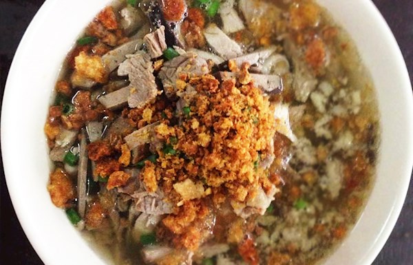

La Paz Batchoy

La Paz Batchoy an Ilonggo delicacy
Batchoy is a soup dish composed of sliced pork, pig’s innards, and miki noodles.This
dish originated from the district of La Paz in Iloilo City — in the island of Panay.
Throughout the years, batchoy gained popularity and has been a favorite soup dish along
with beef mami, beef pares, and bulalo.The miki noodles used in this recipe refers to
fresh egg noodles. This type of noodle is often used in soup dishes. Since the noodles
are fresh, it requires minimal cooking time. Sometimes, pouring hot broth over the
noodles is enough to cook it.
Traditional batchoy recipe requires the use of shrimp paste or guinamus (or guinamos).
Unlike regular shrimp paste or bagoong, the shrimp paste used in traditional batchoy are
sold in small blocks. It is usually mixed in water and boiled until the flavor comes
out. It is later strained and the liquid is added to the broth or caldo. If you can’t
find this type of guinamus, you can always use regular shrimp paste – like what I did.
Ingredients
- 1 lb fresh noodles boiled for 1 minute and drained
- lb pork
- 1 lb pig's intestines; cleaned boiled, and sliced
- 1/4 lb pig liver sliced into strips
- 1 1/2 teaspoons salt
- 1/2 teaspoon ground black pepper
- 2 teaspoons sugar
- 1 teaspoon shrimp paste bagoong or guinamus
- 1 teaspoon onion powder
- 1 cup pork cracklings chicharon, crushed
- 3 tablespoons spring onion chopped
- 1/4 cup toasted garlic
- 7 cups water
Preparation Procedures
- Boil water in a cooking pot.
-
Add salt, sugar, onion powder, ground black pepper, and shrimp paste in the boiling
water. Cook for a minute.
- Add the pork and cook until tender (about 30 to 45 minutes)
-
Add the intestines and liver, when the pork is tender, and then cook for 6 to 10
minutes.
- Remove the pork, liver, and intestine from the broth (caldo). Set aside.
- Slice the pork into strips.
- Arranged the cooked fresh noodles in a single serving bowl.
- Place the strips of pork, liver, and intestine on top of the fresh noodles.
-
Pour the broth in the bowl, and then garnish with spring onions and toasted garlic.
- Serve hot. Share and enjoy!